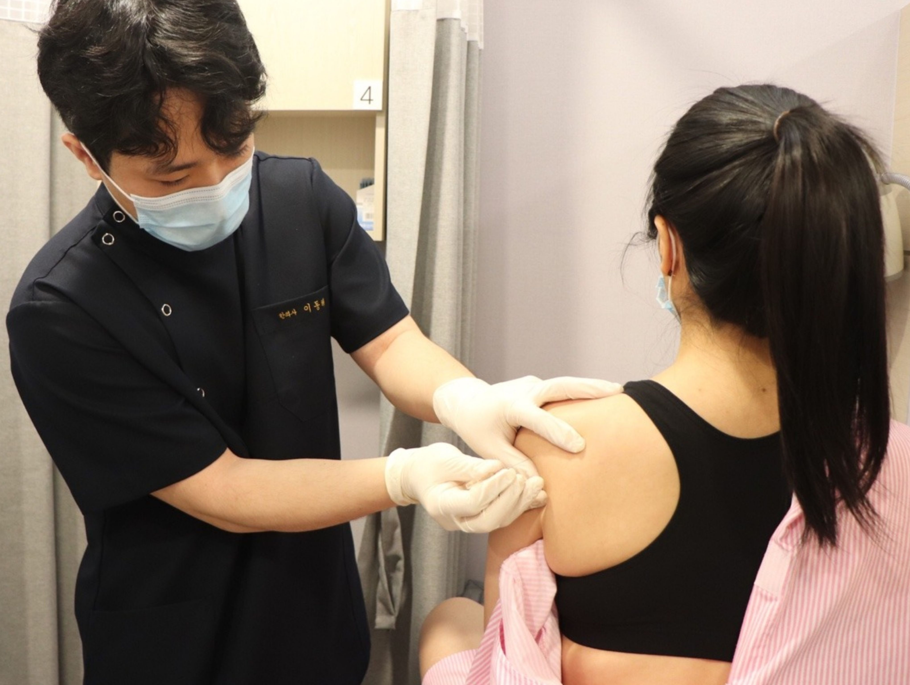
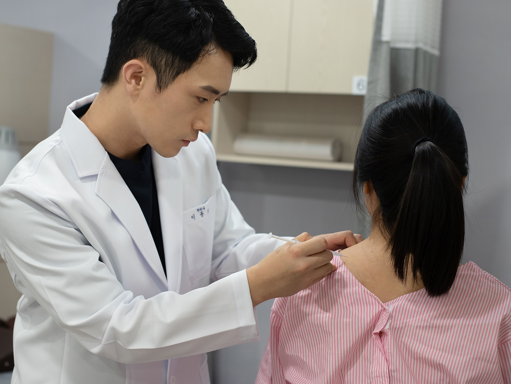
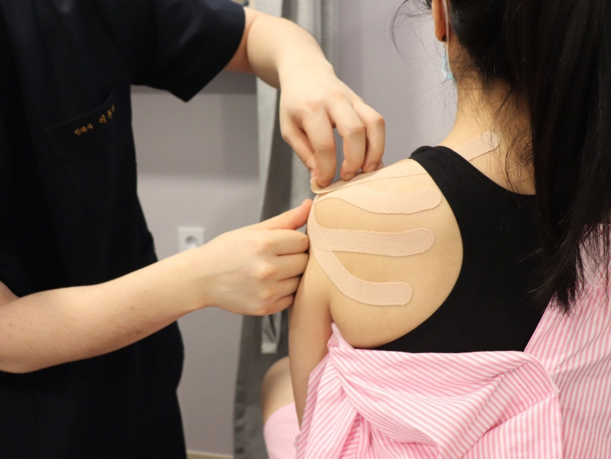

BODY-ALL WIKI
BODY-ALL WIKI
수원 오십견·어깨통증 치료:
굽은 등을 펴야 어깨가 열립니다

팔을 들어 올릴 때마다 찌릿한 통증이 느껴지시나요? 수원 인계동 바디올한의원은 어깨 통증의 원인을 단순히 어깨 관절 하나만으로 보지 않습니다. 말린 어깨(라운드 숄더)와 굽은 등이라는 근본적인 체형 구조를 해결하지 않으면, 어깨 근육은 늘 과부하 상태에 놓이게 됩니다. 등을 펴는 구조 개선이 병행되어야 치료 속도가 빨라지고 재발을 막을 수 있습니다.
A. 어깨가 움직일 수 있는 '물리적 공간'이 좁아져 있기 때문입니다.
등이 굽으면 어깨뼈(견갑골)가 앞으로 기울면서 팔뼈와의 사이가 좁아집니다. 이 상태에서 팔을 움직이면 힘줄이 계속 뼈에 긁히며 염증을 유발합니다. 바디올은 세밀한 구조 정렬을 통해 굽은 등을 펴고 어깨의 회전 공간을 확보하는 것을 치료의 시작으로 삼습니다.
1. 지레의 법칙으로 본 어깨 통증: "등은 어깨의 지지대입니다"
등뼈(흉추)가 무너지면 어깨 근육은 팔의 무게를 지탱하기 위해 24시간 내내 과도한 긴장 상태에 놓입니다. 밧줄(근육)을 아무리 갈아 끼워도 기둥(등뼈)이 기울어 있으면 밧줄은 다시 끊어질 수밖에 없습니다. 바디올은 기둥을 바로 세우는 치료에 집중합니다.
2. 오십견 vs 회전근개 질환, 차이를 확인하세요
| 구분 | 오십견(유착성 관절낭염) | 회전근개 손상/충돌증후군 |
|---|---|---|
| 통증 특징 | 모든 방향으로 움직이기 힘듦 | 특정 각도에서만 심한 통증 |
| 근본 원인 | 관절낭의 노화 및 유착 | 굽은 등으로 인한 반복적 마찰 |
| 바디올 처방 | 도침 박리 + 구조 정렬 | SART 교정 + 봉약침 |
3. 바디올만의 세밀한 어깨 치료 프로그램
숙련된 의료진이 초음파와 이학적 검사를 통해 통증의 깊이를 파악하고, 부드러운 교정과 특수 침 요법을 병행합니다.

[구조 정렬] 굽은 등과 말린 어깨를 부드럽게 펴주어 관절 공간 확보

[유착 해소] 도침으로 굳어버린 관절막과 유착된 조직을 미세 분리

[염증 제어] 고농도 봉약침으로 심부 염증을 제거하고 조직 재생 촉진

[보호/안정] 치료 후 근육을 지지하고 회복을 돕는 기능적 처치
4. 왜 수원 어깨 치료는 바디올인가?
- 원인 기반 치료: 어깨만 주무르지 않고, 어깨를 아프게 만든 굽은 등을 먼저 해결합니다.
- 체계적인 도구 활용: 초음파를 활용해 손상 부위를 확인하고 도침, 봉약침 등 고난도 시술을 안전하게 시행합니다.
- 편안한 진료 환경: 평일 야간진료(20:30까지)와 주말 진료로 통증이 심할 때 언제든 방문 가능합니다.